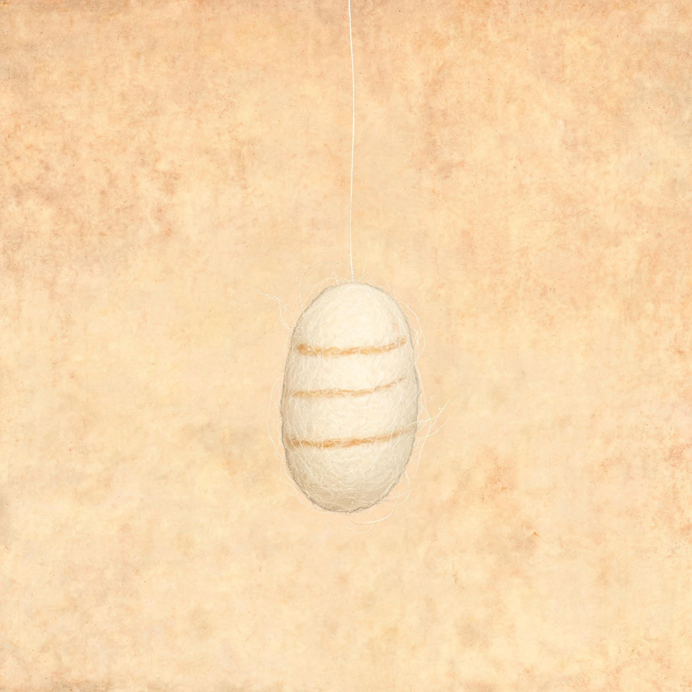

青棠宗
拾茧者 · 沈砚
筑基三层 · 外门
灵石
480
神识
72
/100
囊中茧
0
维
时 空 裂 缝
拾 取
此处寂然
裂缝须臾再生一茧
缝口生茧 1 / 3 · 距下一枚 01:28
维
此门只问一句口令
退
入
孵 化 · 风 险 评 估
青皮茧
中品 · 偏木
险

k-01 · 青皮茧
已 知 线 索
茧衣完整，无破口，丝线尚新
透出淡木气，近之微温
种下 18 分钟后见异动，纹路转深
未显：茧内是否有活物（需再候 6 分钟）
妖 魔 概 率
真物
48%
空壳
24%
妖魔
12–18%
无意义物
10%
投 入
灵石
24
神识
10
中品基准，异品另计
失 败 后 果
孵出妖魔：神识
−30
，该畦格冷却
加倍
，茧
不毁
，可镇后再孵。
暂 缓
投 入 · 孵 化
卷
合